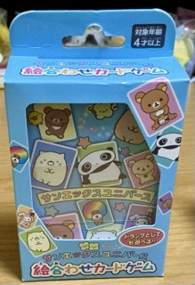
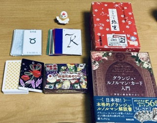

🃏 トランプ
FF14＜ミソロジー・オブ・エオルゼア＞トランプ
全体運のリーディングに使用。デッキの雰囲気や好きなポイントなどを一言。
リーディングで共に歩む相棒の札たち
今月の12星座運勢では、こちらの3種類のデッキを使用しています。
全体運のリーディングに使用。デッキの雰囲気や好きなポイントなどを一言。

恋愛・対人運のリーディングに使用。絵柄の特徴やメモなど。

健康運のリーディングに使用。季節の移ろいや手触りの魅力など。

過去のリーディングや気分に合わせて登場するお気に入りの札です。

過去のリーディングや気分に合わせて登場するお気に入りの札です。

過去のリーディングや気分に合わせて登場するお気に入りの札です。